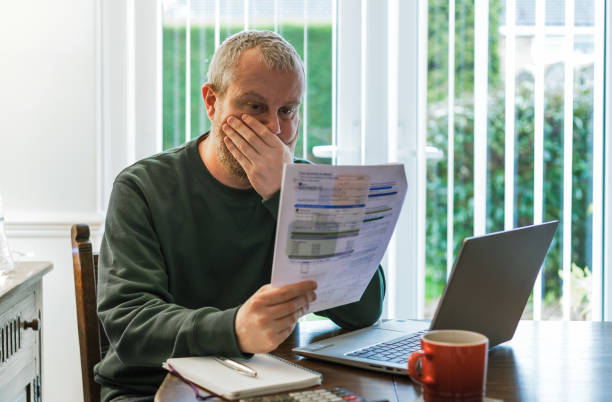

Nosso Público-Alvo
Trabalhamos para impactar pequenas empresas e famílias, oferecendo soluções acessíveis e práticas.
Por que pequenas empresas e famílias?
Pequenas empresas e famílias enfrentam desafios crescentes com o aumento do custo da energia elétrica. Enquanto as empresas lutam para manter seus custos sob controle e continuar crescendo, as famílias buscam formas de economizar sem abrir mão de conforto e qualidade de vida.

Como podemos ajudar?
- Para pequenas empresas: soluções para monitorar e otimizar o consumo, reduzindo custos e aumentando a eficiência energética.
- Para famílias: ferramentas práticas que ajudam a economizar energia, contribuindo para um orçamento mais equilibrado e sustentável.
Impacto direto no seu dia a dia
Ao adotar práticas sustentáveis, empresas e famílias não apenas economizam dinheiro, mas também contribuem para um futuro mais limpo e saudável para todos.
Descubra como ajudamos